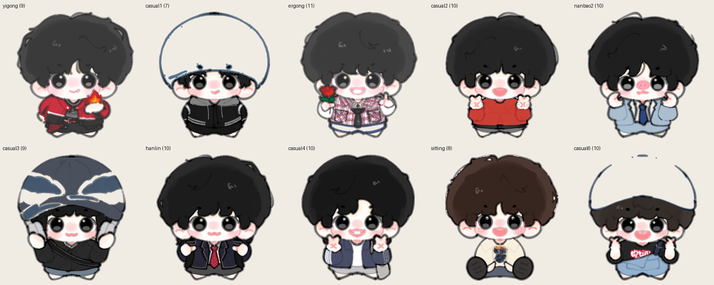
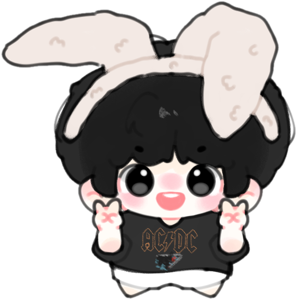
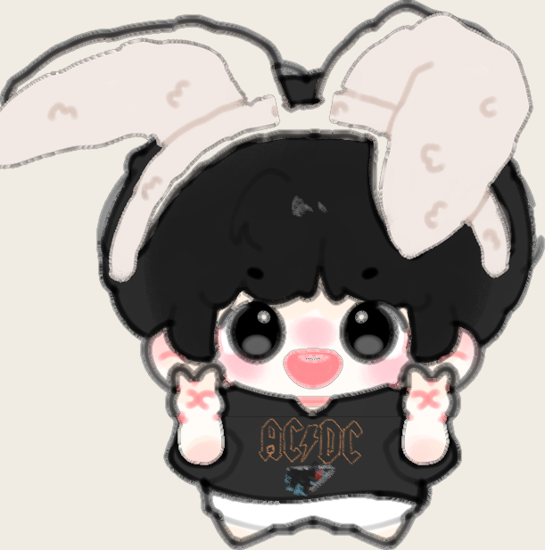
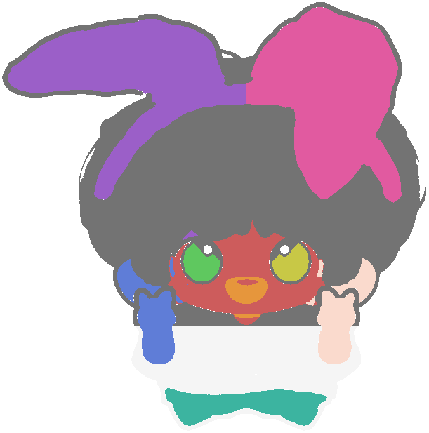

输入只有一张画师绘制的单层插画。我用图像算法自动完成抠图与 11 层部件切分，以"描边拓扑 + 枢轴旋转"替代 Live2D 实现骨骼动画，并设计声明式皮肤系统——新增一套皮肤只需一条命令。同一套资产同时驱动网页版与 Windows 桌面端。
11 套皮肤全部由自动流水线从画师原图生成， 支持 8 种交互状态（待机 / 戳 / 拖拽 / 坠落 / 睡眠 / 醒来 / 行走 / 闲聊），闲聊内容由状态机 + 冷却权重表驱动。



目标效果介于"序列帧"和"Live2D"之间。序列帧体积大、无法换肤；Live2D 学习成本高且要求分层源文件——但手头只有一张合层图。于是选择第三条路：用算法把合层图"逆向分层"，再用轻量的枢轴旋转模拟骨骼。
边缘洪水填充 + alpha 通道检查，区分背景白与内容白。
按"闭合暗色描边"拓扑切分：阈值 → 腐蚀断桥 → 连通域 → 距离变换测厚 → 最近邻归属。
每层一个 pivot，绕耳根 / 眼心 / 腰线旋转；呼吸、眨眼、点头、头发摆动分层叠加。
skin.json 一份配置，同时驱动 Web DOM 动画与 PowerShell/WPF 透明置顶窗口。

作品集里最有含金量的部分不是"做了什么"，而是"遇到什么、怎么判断、怎么修"。
角色皮肤、兔耳、短裤全是白色系，颜色聚类完全失效。改为利用画师的描边习惯：每个部件都被闭合的暗色轮廓包围。以 V<150 提取暗色像素，形态学腐蚀切断抗锯齿像素的"桥接"，再用连通域 + 距离变换（测描边厚度）区分"描边"与"大面积暗色填充（头发）"。11 层切分结果重组后与原图逐像素几乎一致。
耳层切出后带灰色阴影条，加了"低饱和灰"过滤器清除；但同一过滤器把蓝色贝雷帽（低饱和大色块）也误杀成透明。修复方式：灰色过滤只对厚度 < 10px 且面积 < 300px² 的细条带生效——一次修复同时解决阴影残留与帽子透明两个线上问题。
拖拽挤压（squash & stretch）每帧把 ScaleX 写进同一 RenderTransform，覆盖了 640→160px 的基础缩放，角色瞬间放大到只露一角。拆成两层变换：stage 节点管基础缩放，petCanvas 节点管每帧挤压，二者相乘互不污染。
为拖拽（位移 dx≈106/dy≈318）与 11 套皮肤加载写 jsdom 无头测试，0 运行时错误；111 条台词按状态（idle/poke/drag/fall/sleep/wake）+ 权重 + 冷却秒数构成状态机，通用池与皮肤专属池合并去重，杜绝连续复读同一句。
面试官看的不只是结果，更是过程是否可追溯。以下 7 类材料建议全部归档：
| 类别 | 内容 | 用途 |
|---|---|---|
| ① 代码仓库必须 | git init 全项目并按阶段提交——提交历史本身就是"过程记录"的证据 | GitHub 链接放简历 |
| ② 案例文档必须 | 本页 + 同目录《项目案例.md》，STAR 结构，可转 PDF | 作品集 / 面试附件 |
| ③ 演示视频必须 | 15–30s 录屏：拖拽 → 坠落 → 睡眠 → 换肤 → 说话（ScreenToGif / OBS） | 简历附 GIF 或二维码 |
| ④ 在线可点链接 | 网页版 https://bunny-desk-pet.app.workbuddy.host/（面试官 10 秒内可玩到） | 简历"链接"栏 |
| ⑤ 可下载成品 | 兔耳小人桌宠.zip（4.5MB，解压即用） | 证明交付能力 |
| ⑥ 过程截图 | 抠图前后、连通域调试图、耳朵旋转测试、修复前后对比、WPF 桌面实拍 | 面试讲技术细节时的视觉支撑 |
| ⑦ 数据资产 | 台词表.csv（111 条）、皮肤层数统计、assets/ 目录（已归档于本目录） | 量化成果的出处 |
同一件事，按目标岗位侧重不同写法（简历 bullet）：
面试 3 分钟讲法：① 一句话结果（30s）：把一张插画做成可换肤桌宠，双端上线；② 最难的一件事（90s）：颜色无法分层 → 观察描边闭合特征 → 腐蚀断桥 + 厚度测量的推理过程，重点讲"灰色过滤器误杀蓝帽子"这类取舍；③ 数据与验证（60s）：重组像素级一致、11 套皮肤 0 报错、111 条台词状态机。